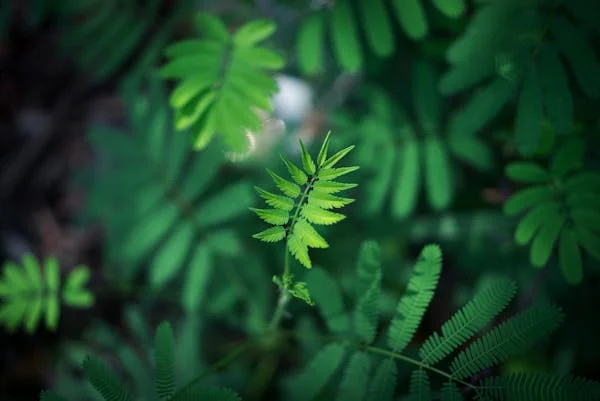
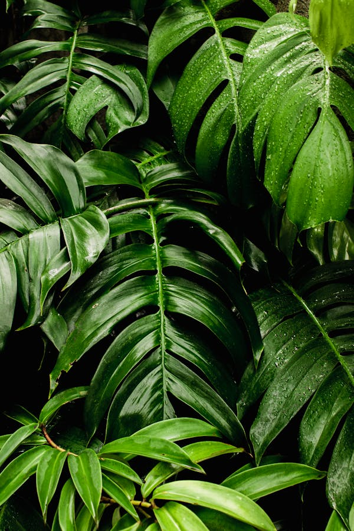

Green leaves are essential to life on Earth, serving as the primary site for photosynthesis, the process by which plants convert sunlight into energy. Through this process, leaves absorb carbon dioxide from the air and release oxygen, a critical component of the atmosphere that supports most life forms. The chlorophyll within green leaves is responsible for their vibrant color and their ability to capture light energy.
Beyond their biological functions, green leaves contribute significantly to the aesthetic and ecological health of the planet. They help to regulate the climate by providing shade, cooling the air through transpiration, and reducing the urban heat island effect in cities. Leaves also play a vital role in maintaining soil health.
In human culture, green leaves symbolize growth, renewal, and sustainability, inspiring countless works of art, literature, and environmental initiatives aimed at preserving the natural world.
This transformation not only sustains the plant itself but also forms the foundation of the food chain, supporting herbivores and, indirectly, the carnivores that prey on them.
Ferns are incredibly versatile, growing in a variety of environments from tropical rainforests to temperate woodlands, and even as houseplants.Their ability to thrive in shaded, moist conditions makes them an important component of forest ecosystems,contributing to soil health and providing habitat for numerous small organisms.
Ferns are ancient, non-flowering plants that have thrived for millions of years, known for their lush, feathery fronds that unfurl in a characteristic spiral. They reproduce via spores rather than seeds, typically found on the underside of their fronds.